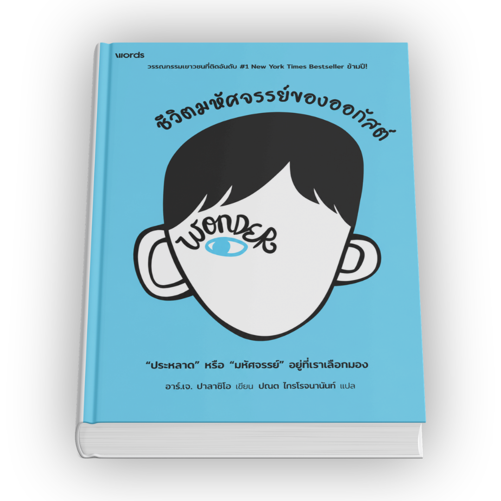
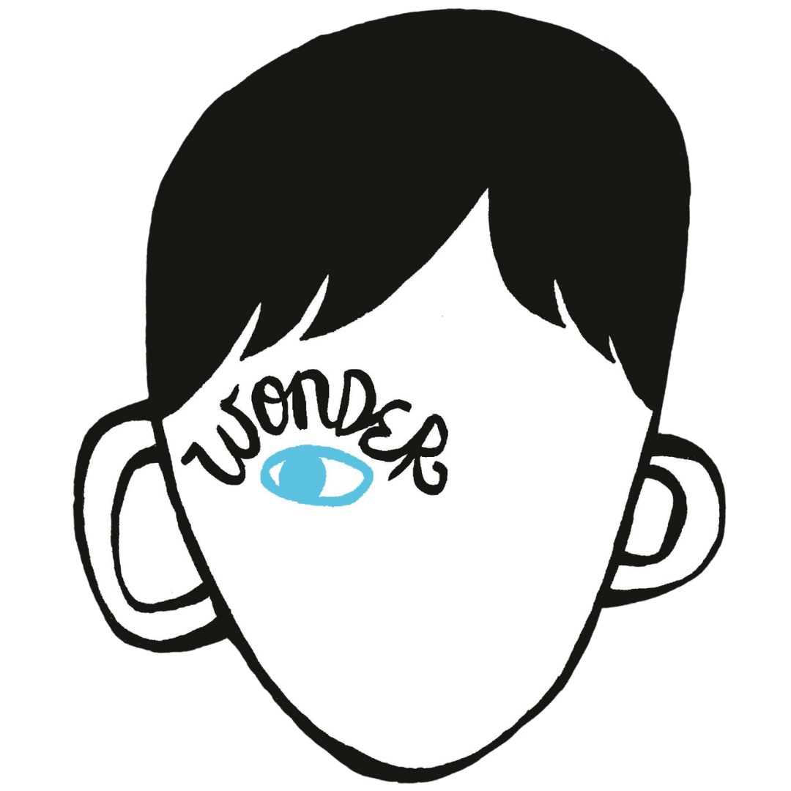
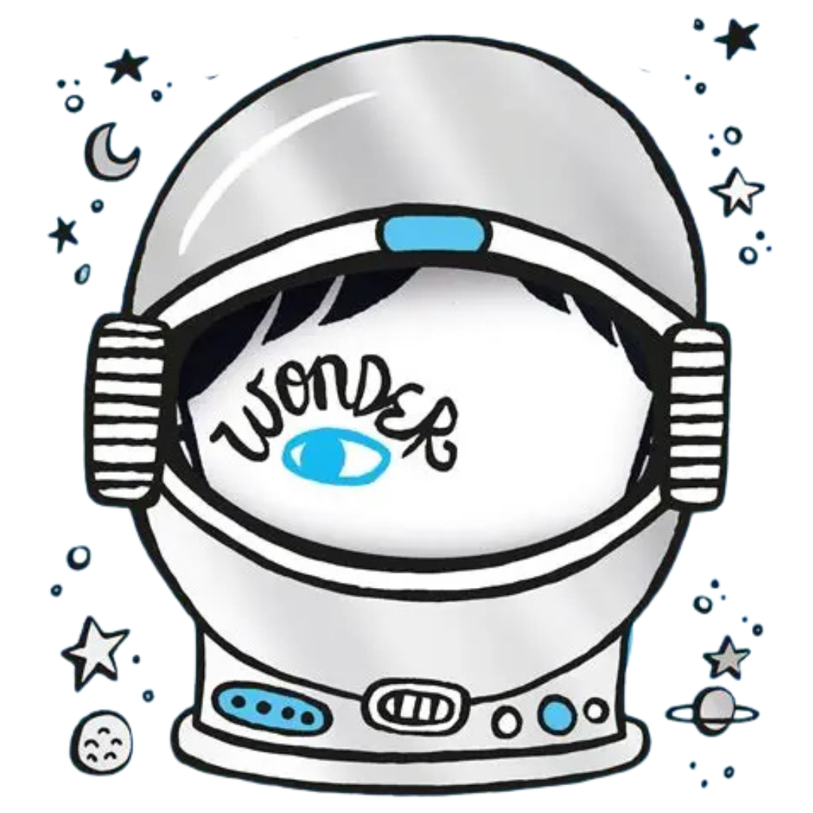
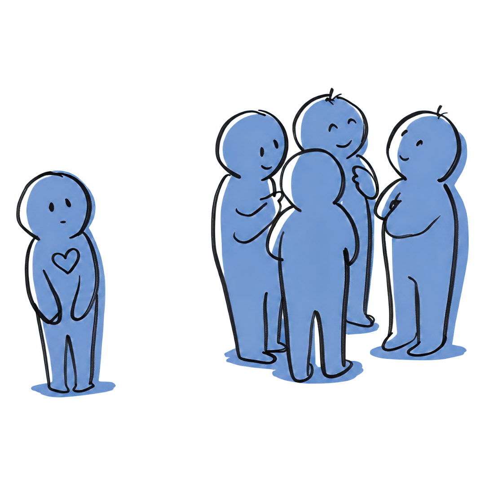
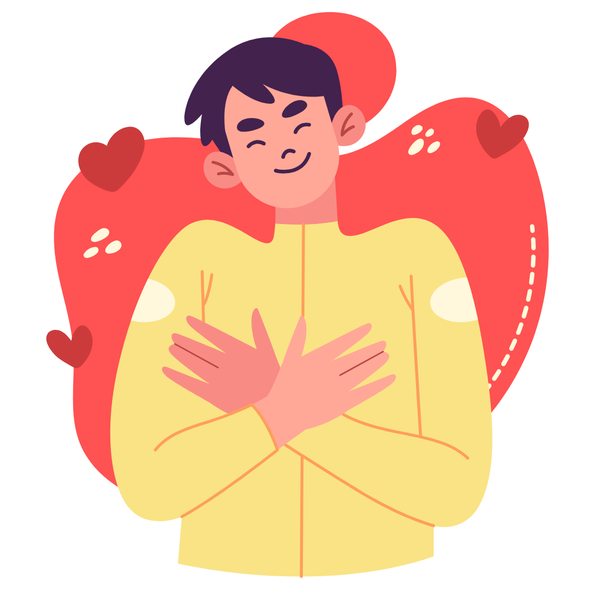

เมื่อต้องเลือกระหว่าง
ความถูกต้องกับความเมตตา
จงเลือกความเมตตา

เมื่อต้องเลือกระหว่าง
ความถูกต้องกับความเมตตา
จงเลือกความเมตตา

มาร่วมเดินทางไปกับ ออกัสต์ พูลล์แมน เด็กชายวัย 10 ขวบผู้เกิดมาพร้อมความผิดปกติทางใบหน้า กับการก้าวแรกสู่โรงเรียนที่โลกไม่ได้ใจดีกับเขาเสมอไป วรรณกรรมเยาวชนที่จะทำให้คุณเสียน้ำตา เรียนรู้พลังแห่งความเมตตา และการเปลี่ยนมุมมองพร้อมค้นพบความหมายที่แท้จริงของการมองเห็นกันและกันด้วยหัวใจ


WONDER ชีวิตมหัศจรรย์ของออกัสต์ วรรณกรรมเยาวชนที่ถ่ายทอดเรื่องราวของ ออกัสต์ พูลล์แมน เด็กชายวัย 10 ขวบผู้เกิดมาพร้อมความผิดปกติทางใบหน้าอย่างรุนแรง และต้องเผชิญกับบททดสอบครั้งใหญ่เมื่อต้องก้าวเข้าสู่โรงเรียนประถมเป็นครั้งแรกในชีวิต หนังสือเล่มนี้บอกเล่าผ่านมุมมองของออกัสต์ ครอบครัว และเพื่อนๆ รอบข้าง สะท้อนให้เห็นทั้งบาดแผลจากการถูกกลั่นแกล้ง ความเหงาโดดเดี่ยว และการเติบโตผ่านอุปสรรค เป็นเรื่องราวที่จะชวนทุกคนตั้งคำถามระหว่าง "ความถูกต้อง" กับ "ความเมตตา" พร้อมเรียนรู้ที่จะเปลี่ยนมุมมอง ปรับตัว และเติบโตไปด้วยกันอย่างแข็งแกร่งนับตั้งแต่วันแรกที่ออกัสต์ตัดสินใจก้าวออกจากบ้าน
ช่วยปลูกฝังเรื่องการไม่กลั่นแกล้งกัน และการยอมรับความแตกต่างของผู้อื่นในสังคมโรงเรียน
ช่วยให้เข้าใจสภาวะจิตใจของเด็ก บทบาทสำคัญของครอบครัว และแนวทางการสร้างบรรยากาศแห่งความเห็นอกเห็นใจและความเมตตาในโรงเรียน
เหมาะสำหรับผู้ที่ต้องการอ่านวรรณกรรมสร้างแรงบันดาลใจ สอดแทรกแนวคิดระหว่างความถูกต้องและความเมตตา อบอุ่นหัวใจ และเติมพลังบวก

เพิ่มความกล้าหาญในการก้าวออกจาก Safe Zone เผชิญหน้ากับอุปสรรคใหม่ ๆ และสร้างความมั่นใจในการเป็นตัวของตัวเองอย่างภาคภูมิใจ

เป็นวรรณกรรมเยาวชน ที่ใช้ภาษาเป็นกันเอง เนื้อหาตรงไปตรงมาสอนข้อคิดให้กับผู้อ่าน
หนังสือแบ่งบทการเล่าเรื่องผ่านสายตาของตัวละครต่าง ๆ เช่น ออกัสต์ (ตัวเอก), พี่สาว (โอลิเวีย), เพื่อนสนิท (แจ็ค วิลล์) ทำให้เราเข้าใจความรู้สึกและความคิด การเปลี่ยนมุมมองและพัฒนาการต่าง ๆ ที่แสดงให้เห็นถึงความแตกต่างของตัวละคร
หัวข้อหลักของเรื่องเกี่ยวกับเรื่องการไปโรงเรียนวันแรก การหาเพื่อนใหม่ การถูกกลั่นแกล้ง และความสัมพันธ์ในครอบครัว ซึ่งเป็นประสบการณ์ที่ทุกคนคุ้นเคยในชีวิตประจำวันอยู่แล้ว
ไม่ว่าจะเป็นเด็ก วัยรุ่น พ่อแม่ หรือผู้ใหญ่ทั่วไป ก็สามารถเริ่มอ่านแล้วสนุกไปกับเรื่องราว พร้อมรับพลังบวกและความซาบซึ้งได้ในทันที
เมื่อต้องเลือกระหว่างการทำตัวให้ถูก หรือการทำตัวให้ใจดี ให้เลือกที่จะใจดีเสมอ เพราะความเมตตากระทบจิตใจผู้คนได้ลึกซึ้งกว่า
หน้าตาและรูปลักษณ์ไม่ใช่สิ่งตัดสินคุณค่าของคน ความสวยงามที่แท้จริงและจิตใจที่งดงามซ่อนไม่อยู่ข้างในเสมอ

การยอมรับและภาคภูมิใจในสิ่งที่ตัวเองเป็น แม้จะแตกต่างจากผู้อื่น ต้องใช้ความกล้าหาญยิ่งใหญ่ เพราะทุกคนล้วนมีความแตกต่างในตัวเองและนั่นคือสิ่งที่ทำให้ทุกคนมหัศจรรย์
ทุกคนที่เราพบเจอกำลังต่อสู้กับอุปสรรคในชีวิตที่คนอื่นอาจไม่เคยรู้ การเห็นอกเห็นใจกันจึงเป็นสิ่งสำคัญที่สุดในสังคม